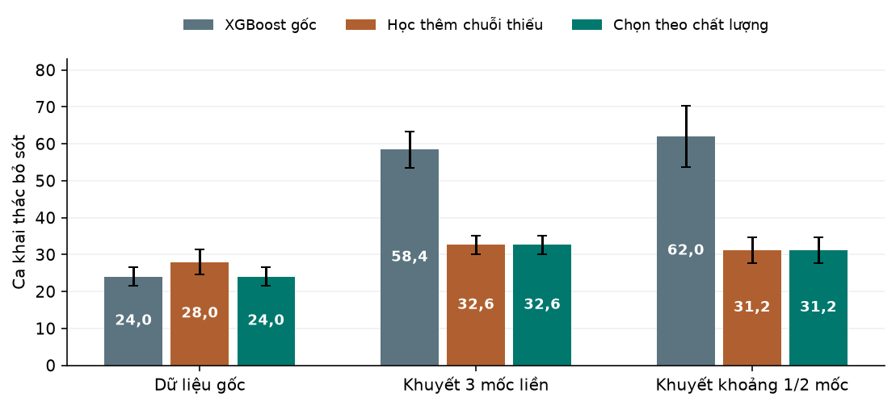

Kiểm chứng mô-đun hành vi
Đề Chặng 2 yêu cầu tách đóng góp của bộ ước lượng Kalman, đối chiếu kích thước và dữ liệu hành vi, rồi kiểm tra ảnh hưởng của gợi ý AI lên thao tác rà.
Kalman và kiểm tra kích thước
| Cấu hình | Cặp đúng | Cặp sai | Từ chối | Mâu thuẫn đúng / tổng¹ | Cờ nhầm¹ |
|---|---|---|---|---|---|
| Tuyến tính · tắt kích thước | 1.229 | 3 | 3.568 | 0/413 | 0 |
| Tuyến tính · có kích thước | 1.229 | 3 | 3.568 | 387/413 | 20 |
| Kalman · tắt kích thước | 1.239 | 0 | 3.561 | 0/418 | 0 |
| Kalman · có kích thước | 1.239 | 0 | 3.561 | 393/418 | 23 |
¹ Trên cặp ghép đúng. Kịch bản hộp radar nhiễu mạnh có 85/110 mâu thuẫn được phát hiện, 25 bỏ sót và 23 cờ nhầm với Kalman và kiểm kích thước. Dữ liệu mô phỏng.
Dữ liệu huấn luyện hành vi

| Dữ liệu học | Đủ bản tin | Mất bản tin | Cửa sổ ngắn | Chồng lấn |
|---|---|---|---|---|
| SOG mới nhất · 400 | 0,861 ± 0,022 | 0,745 ± 0,020 | 0,691 ± 0,045 | 0,493 ± 0,020 |
| Quỹ đạo sạch · 48 | 0,997 ± 0,004 | 0,993 ± 0,006 | 0,810 ± 0,043 | 0,321 ± 0,018 |
| Quỹ đạo sạch · 400 | 0,999 ± 0,002 | 0,976 ± 0,012 | 0,539 ± 0,023 | 0,236 ± 0,032 |
| Quỹ đạo có nhiễu · 400 | 1,000 ± 0,000 | 0,997 ± 0,004 | 0,971 ± 0,010 | 0,883 ± 0,021 |
| Sạch và nhiễu · 800 | 1,000 ± 0,000 | 0,996 ± 0,004 | 0,974 ± 0,014 | 0,889 ± 0,010 |
Trung bình ± độ lệch chuẩn trên 5 seed. Bảng này dùng nhãn từ trình sinh quỹ đạo.
Đối chứng bằng AIS thật
1.026.279 bản ghi với 123 mã chuyến phân biệt trong tệp AIS Đan Mạch, được tác giả bộ dữ liệu gán nhãn thủ công. Chấm 1.399 cửa sổ hai giờ của 84 tàu, gồm 1.155 cửa sổ khai thác.
| Cấu hình | Macro-F1 | Recall | Precision | Bỏ sót | Cờ nhầm |
|---|---|---|---|---|---|
| Chỉ học mô phỏng · 5 seed | 0,519 | 0,779 | 0,836 | 172–317 | 150–204 |
| Học AIS · tốc độ gần nhất | 0,671 | 0,918 | 0,878 | 95 | 147 |
| Học AIS · chuỗi tốc độ | 0,901 | 0,969 | 0,963 | 36 | 43 |
| Học AIS · toàn quỹ đạo | 0,920 | 0,978 | 0,967 | 25 | 38 |
Mô hình học mô phỏng được giữ nguyên. Các biến thể học AIS thật chấm theo 5 lượt tách tàu, dùng cùng bộ lọc và cửa sổ chấm. Khoảng 95% bootstrap theo tàu của chênh macro-F1 giữa toàn quỹ đạo và chuỗi tốc độ là [0,001, 0,040].
Phạm vi gồm hai trạng thái khai thác và di chuyển tại Đan Mạch. Cần thêm nhãn bốn lớp ở Việt Nam, dữ liệu SAR–AIS đối chứng và đánh giá với chuyên viên thật.
Dữ liệu gốc và giấy phép CC BY 4.0 · Tải kết quả theo seed và tàu giữ riêng
Rà với và không có gợi ý AI
Hai lượt, mỗi lượt 8 ca mô phỏng, đổi thứ tự và điều kiện theo mã người rà. Thời lượng, ca bỏ sót và cờ nhầm được tính từ phiếu thực tế.
| Nhóm | Số phiếu | Bỏ sót không / có AI | Chênh giây có − không AI |
|---|---|---|---|
| Chuyên viên tự khai | 0 | Chưa có phiếu | Chưa ước tính |
| Thử nghiệm sơ bộ | 0 | Chưa có phiếu | Chưa ước tính |
Đối chứng thao tác tự động
32 phiên trình duyệt, 512 quyết định, 8 quy tắc giả lập. Mỗi dòng gộp lặp và so cùng 16 ca mô phỏng ở từng điều kiện.
| Quy tắc mô phỏng | Bỏ sót không / có AI | Cờ nhầm không / có AI | Chưa đủ dữ liệu không / có AI |
|---|---|---|---|
| Nhạy · AI nhẹ | 1 / 1 | 2 / 2 | 1 / 0 |
| Nhạy · AI mạnh | 1 / 1 | 2 / 3 | 1 / 0 |
| Cân bằng · AI nhẹ | 2 / 1 | 2 / 2 | 1 / 0 |
| Cân bằng · AI mạnh | 2 / 1 | 2 / 2 | 1 / 0 |
| Thận trọng · AI nhẹ | 2 / 1 | 2 / 2 | 0 / 0 |
| Thận trọng · AI mạnh | 2 / 2 | 2 / 0 | 0 / 3 |
| Chọn lọc · AI nhẹ | 3 / 2 | 2 / 2 | 1 / 0 |
| Chọn lọc · AI mạnh | 3 / 2 | 2 / 0 | 1 / 0 |
Thời gian trong tệp JSON là thời gian thao tác của trình duyệt tự động. Kết quả khảo sát người tham gia chỉ nhận phiếu thật.
Độ bền khi mất bản tin
Năm lần chia theo tàu, tổng 25 lượt giữ riêng tàu. Mỗi lần chấm cùng 1.155 cửa sổ khai thác qua dữ liệu gốc và hai kịch bản thiếu bản tin.

| Cấu hình | Dữ liệu gốc | Khuyết 3 mốc liền | Khuyết khoảng 1/2 mốc |
|---|---|---|---|
| XGBoost gốc | 24,0 / 38,4 | 58,4 / 31,0 | 62,0 / 34,2 |
| Học thêm chuỗi thiếu | 28,0 / 38,6 | 32,6 / 36,0 | 31,2 / 41,0 |
| Chọn theo chất lượng | 24,0 / 38,4 | 32,6 / 36,0 | 31,2 / 41,0 |
| Chọn mô hình theo F1 | 29,0 / 33,2 | 139,0 / 23,8 | 200,6 / 25,4 |
| Chọn mô hình theo recall | 18,4 / 55,2 | 78,4 / 31,2 | 366,2 / 30,6 |
Mỗi ô là số ca bỏ sót / số cờ nhầm trung bình. Quy tắc chọn chất lượng dùng mô hình học chuỗi thiếu khi có dưới 9 mốc hoặc khoảng trống bên trong dài hơn 30 phút.
Độ dài cửa sổ
| Độ dài | Cửa sổ | Recall | Macro-F1 |
|---|---|---|---|
| 60 phút | 2.854 | 0,974 | 0,919 |
| 120 phút | 1.399 | 0,978 | 0,920 |
| 240 phút | 678 | 0,979 | 0,919 |
Kiểm tra trên Global Fishing Watch
1.940 cửa sổ từ 23 tàu, bao gồm 642 cửa sổ khai thác. Cùng điều kiện 9 mốc tối thiểu trong mỗi cửa sổ 2 giờ.
| Huấn luyện / cách chấm | Macro-F1 | Recall | Precision | Bỏ sót | Cờ nhầm |
|---|---|---|---|---|---|
| Chỉ học mô phỏng · 5 seed | 0,769 | 0,749 | 0,659 | 161,4 | 248,6 |
| Học ở Đan Mạch | 0,415 | 0,782 | 0,338 | 140 | 984 |
| Đan Mạch + chuỗi thiếu | 0,434 | 0,861 | 0,358 | 89 | 992 |
| Tính lại tốc độ và hướng từ tọa độ | 0,398 | 0,724 | 0,321 | 177 | 983 |
| Tính lại và cân bằng nhãn học | 0,381 | 0,659 | 0,302 | 219 | 979 |
| Kênh gốc và cân bằng nhãn học | 0,401 | 0,709 | 0,319 | 187 | 970 |
| Học đa nguồn, giữ riêng nhóm nghề | 0,682 | 0,428 | 0,707 | 367 | 114 |
| Học trên GFW, giữ riêng tàu | 0,915 | 0,893 | 0,882 | 69 | 77 |
Hai dòng cuối dùng một phần GFW để học. Phương án đa nguồn giữ riêng toàn bộ nhóm nghề đang chấm và từng tàu trong nhóm đó. Phương án cùng nguồn giữ riêng tàu, các nhóm nghề vẫn có thể xuất hiện trong tập học.
Ngưỡng 5 mốc cho 5.846 cửa sổ từ 26 tàu. Nhánh câu dây chỉ có đủ ví dụ dương ở điều kiện này. Khác biệt giữa nguồn có thể làm cờ nhầm tăng.
Nguồn dữ liệu Global Fishing Watch · CC BY 4.0 · Tải kết quả theo nguồn và nhóm nghề
Vì sao hai hộp chồng mà vẫn trượt?
Ở ô OpenSAR Insight 4048, khung dự đoán LS-SSDD trên tàu phía dưới chồng lên nhãn với IoU 0,309. Ngưỡng chấm chính là 0,50. Bên SLC VV, hai dự đoán đã được ghép vào hai nhãn, hai hộp khác trùng lên chính các nhãn đã ghép và một hộp nằm ngoài cả hai nhãn.
| Mô hình | Hộp theo thứ tự điểm | IoU lớn nhất | Kết quả |
|---|---|---|---|
| YOLO học SLC VV | 1 | 0,585 | Được ghép một–một |
| YOLO học SLC VV | 2 | 0,638 | Được ghép một–một |
| YOLO học SLC VV | 3 | 0,635 | Hộp trùng trên nhãn đã ghép |
| YOLO học SLC VV | 4 | 0,576 | Hộp trùng trên nhãn đã ghép |
| YOLO học SLC VV | 5 | 0,000 | Không chồng nhãn nào |
| YOLO học LS-SSDD | 1 | 0,309 | Chồng lên nhãn dưới ngưỡng |
IoU là phần diện tích giao chia cho diện tích hợp. Mỗi nhãn được ghép một lần theo thứ tự điểm dự đoán. Chấm mô tả ở IoU 0,30 cho LS-SSDD khớp 1/2 nhãn ở ô này.
So sánh toàn bộ tập ảnh
| Tập ảnh | Phương pháp | Khớp / tổng | Bỏ sót | Ngoài cặp khớp | Precision |
|---|---|---|---|---|---|
| 3 cảnh đối chiếu | YOLO học SLC VV | 51/147 | 96 | 211 | 0,195 |
| 3 cảnh đối chiếu | YOLO học LS-SSDD | 3/147 | 144 | 36 | 0,077 |
| 3 cảnh đối chiếu | Giới hạn danh sách rà | 36/147 | 111 | 93 | 0,279 |
| 3 cảnh đối chiếu | Giới hạn có ưu tiên ven bờ | 37/147 | 110 | 92 | 0,287 |
| Cảnh Biển Bắc giữ riêng | YOLO học SLC VV | 69/146 | 77 | 943 | 0,068 |
| Cảnh Biển Bắc giữ riêng | CFAR vòng nền | 0/146 | 146 | 1 | 0,000 |
| Cảnh Biển Bắc giữ riêng | Giới hạn danh sách rà | 20/146 | 126 | 108 | 0,156 |
| Cảnh Biển Bắc giữ riêng | Giới hạn có ưu tiên ven bờ | 21/146 | 125 | 107 | 0,164 |
Giới hạn và phép thử tiếp theo
| Phần cần kiểm chứng | Giới hạn đã quan sát | Thí nghiệm hoặc dữ liệu cần có |
|---|---|---|
| Nhãn AIS ở Việt Nam | Mô hình học Đan Mạch đạt F1 0,415 khi chuyển sang GFW. Tập Đan Mạch chỉ có hai trạng thái. | Thu quỹ đạo có nhật ký hoặc quan sát độc lập, hai người gán nhãn bốn lớp. Giữ riêng tàu, ngày và vùng chấm. Báo macro-F1 và recall từng lớp, kể cả ca chuyển trạng thái. |
| Mất bản tin | Khi mất nửa số mốc, tăng cường làm giảm bỏ sót và tăng cờ nhầm. | Kiểm tra trên mất tín hiệu tự nhiên. Đo recall, cờ nhầm và tỷ lệ trả “chưa đủ dữ liệu” theo số mốc và khoảng trống. |
| Hộp SAR và khối lượng rà | Một dự đoán có thể đúng vùng tàu nhưng IoU thấp hoặc lặp trên cùng một nhãn. | Giữ IoU 0,50 làm chuẩn. Đo thêm sai số tâm theo mét và phân loại hộp trùng, sai kích thước, điểm ngoài nhãn. Chọn ngưỡng và lọc trùng trên cảnh phát triển riêng. |
| Ghép SAR–AIS và kích thước | Bật Kalman giảm lỗi ghép trong mô phỏng. Nhiễu kích thước vẫn tạo cờ nhầm. | Đối chiếu cảnh SAR và AIS/VMS đồng thời với nhãn tàu độc lập. Báo ghép sai, từ chối, sai số vị trí và cờ kích thước theo khoảng cách tới bờ. |
| Thời gian người rà | 32 phiên chỉ đo thao tác của trình duyệt tự động. Cần phiếu chuyên viên để đo tác động ở người. | Dùng bài thử chéo với các mã luân phiên A/B. Đo thời gian trong từng người, bỏ sót và cờ nhầm. Báo số phiếu và độ bất định của chênh lệch. |